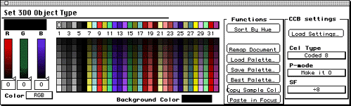

If a palette works out well for a cel, you can save and load it using the Save Palette and Load Palette buttons in the Functions area of the Set 3DO Cel Type dialog, as discussed in the section Saving and loading palettes. This is particularly useful when you're working with an animation.
If 3DO Animator is already open, choose Open from the File menu.
A process method dialog appears.
3DO Animator computes a palette based on the colors in the source art. For an 8-bit coded cel, 3DO Animator creates a palette with 32 base colors and 7 shades of each color, as shown in Figure 4. Once the calculation is complete, the "best" palette is displayed in the palette grid of the Set 3DO Object Type dialog. The artwork is not remapped, however, until you click the Remap Document button.

Figure 1: Set 3DO Object Type dialog for an 8-bit coded cel.
A second dialog appears, prompting for special mapping parameters.
3DO Animator creates a new document and names it with an extension Coded8.
If you're not satisfied, you can edit the palette, then update the document, as discussed in Customizing a palette.